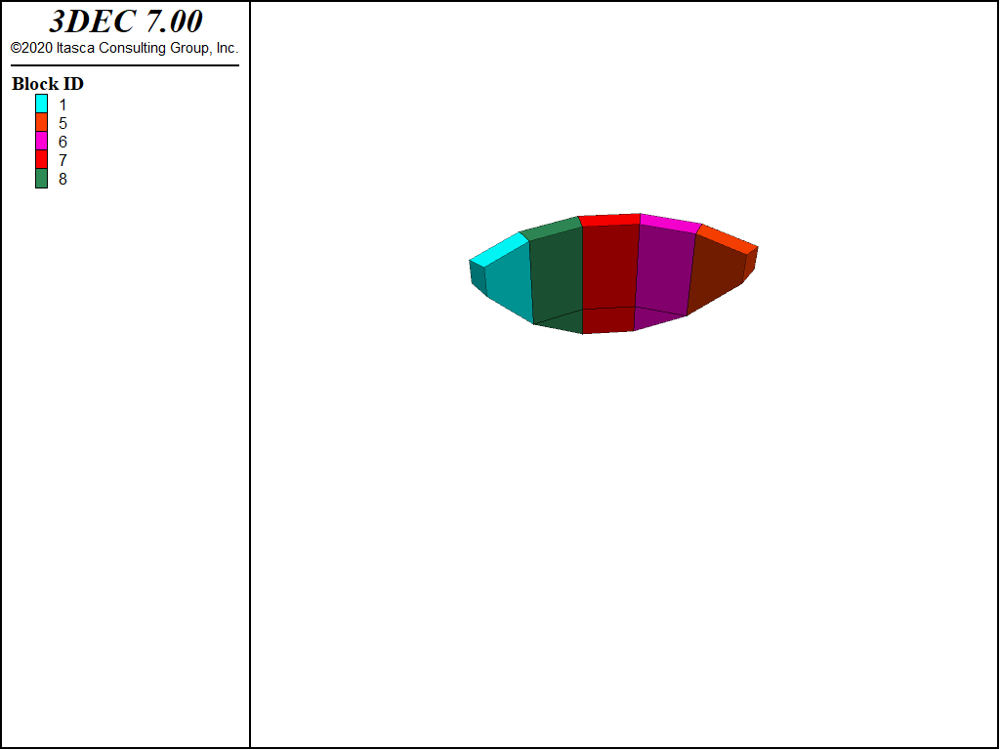
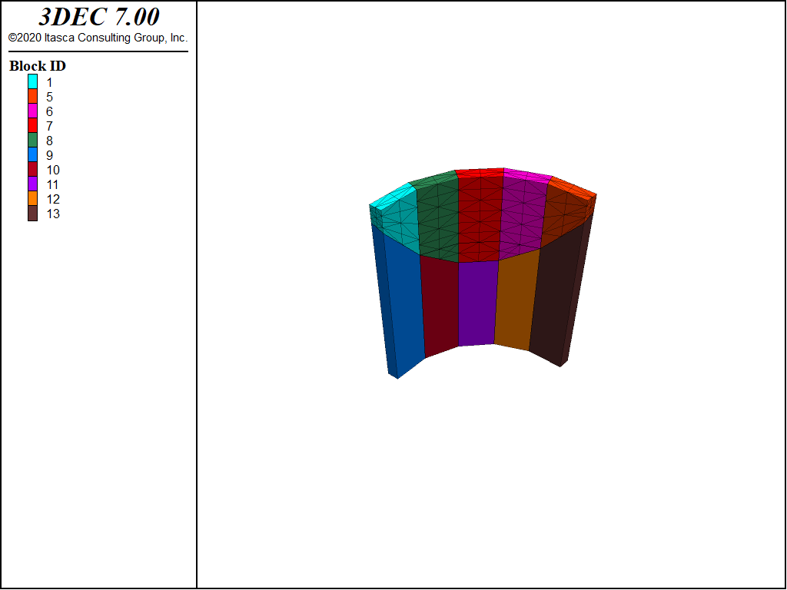
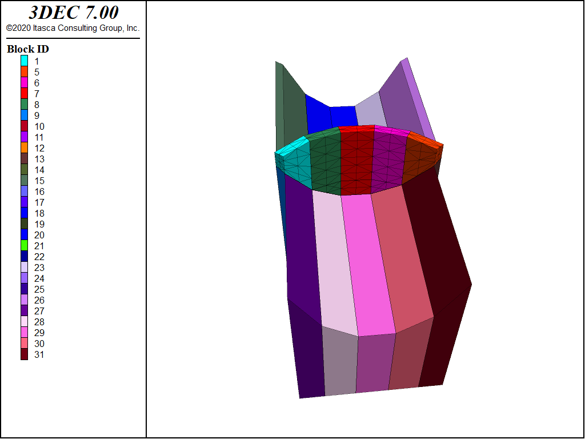
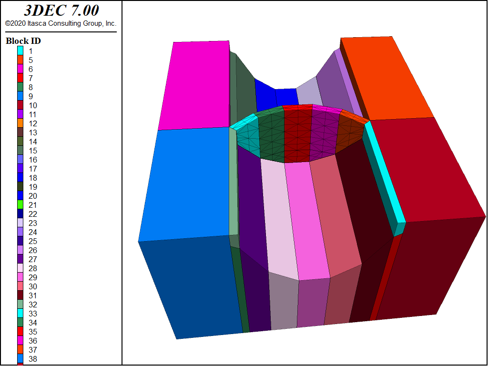
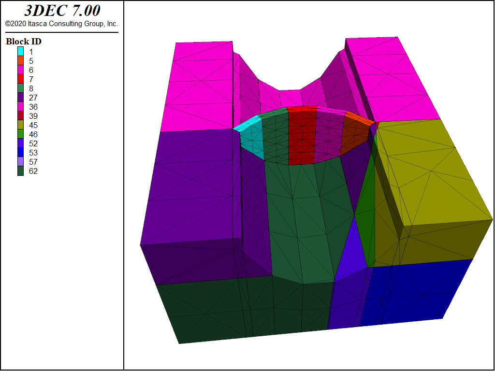
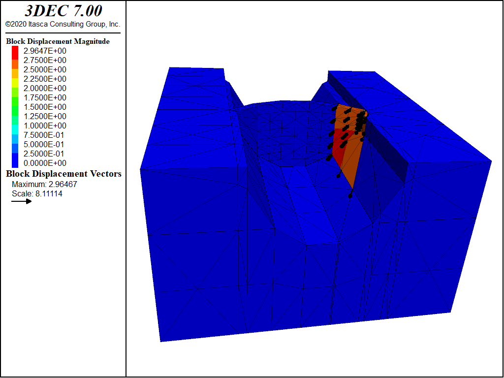

有限元坝体
问题描述
注意
本示例将演示一种在 3DEC 中创建有限元（FE）块体的技术。在本例中，有限单元构成一座带基础和坝肩的坝体。
要在 3DEC 中查看此项目，请使用菜单命令 。选择“3DEC/ ExampleApplications/ FE / Dam”，然后选择“dam.prj”进行加载。所用的主数据文件（main data files）显示在本示例的末尾。所有数据文件都可在该项目中找到。
3DEC 模型几何
用于创建本示例的数据文件列于数据文件（Data Files）中。模型构建从将坝段作为五个普通 3DEC 块体开始。这是在 FISH 函数（geodam）中使用 block create prism 命令完成的。该 FISH 函数还设置了一些 FISH 参数，供后续命令中的尺寸使用。该几何如图 1（Figure 1）所示。


图 1：坝体面板
每个 3DEC 块体包含八个顶点。按 3DEC 块体创建几何之后，再使用命令 feblock generate 将块体转换为有限元块体。
每个顶部中央块体都已转换为三个各含 20 个节点的有限元砖块。底部中央块体各自转换为一个退化有限元砖块。两端的块体各包含两个退化有限元砖块。
下一步是更改坝体块体上的面组名称。这通过 FISH 函数（markdamfaces）为块体面设置面组来实现。随后，block generate from-topo 命令利用这些块体面组，将已有块体向下拉伸至模型底部。该步骤拉伸生成的块体如图 2（Figure 2）所示。


图 2：面板的拉伸生成
然后将底部块体沿 y 方向拉伸，形成如图图 3（Figure 3）所示的上游和下游底部块体。


图 3：向上游和下游方向拉伸生成的块体
随后使用 block create prism 命令创建上游和下游坝肩。这些命令的结果如图 4（Figure 4）所示。


图 4：带坝肩的坝体
在右坝肩切出一条断层，块体按图 5（Figure 5）所示划分网格。


图 5：已划分网格的模型
坝体加载
属性赋值与坝体加载见文件dam-loading.dat。
下一步是为岩体、坝体和节理赋属性。初始时节理保持弹性，以防止在循环计算获得重力平衡的过程中发生移动。坝体还赋予了一个人为偏低的模量。
定义重力，并对岩体和坝体施加地应力。然后隐藏坝体，使用 block insitu topograph 命令初始化河谷应力。随后从坝体中移除这些应力。
此时我们希望将模型运行至平衡。可以使用 feblock gravity delete 命令为有限单元移除坝体上的重力荷载。此时我们还不希望坝体对河谷加载。我们还要对模型施加边界条件并指定一些监测历史记录。
现在我们要从坝体中移除可能由谷底和谷壁产生的任何应力，并在有限元模型中恢复重力。同时重置监测历史记录。
在该阶段，我们使用边界条件为坝体施加水压力（block face apply stress）。
循环计算 5000 步后，我们将节理恢复到适当的强度值，并使用 FISH 函数（ppjoint）为节理添加孔隙压力。
最后，我们降低断层面上的摩擦使其滑动。同时去除岩石与混凝土之间的黏聚力，以模拟开裂的接触。显示滑动断层的最终结果如图 6（Figure 6）所示。


图 6：岩体与坝体中的位移
数据文件
dam-geometry.dat
model new
; ---------------------------------------------------------------------
; --- 有限元块体算例——拱坝分析 ---
; ---------------------------------------------------------------------
model configure feblock
model configure dynamic
;
block tolerance .001
;
; --- GEOMDAM ---
; 用于定义坝体几何形状的 FISH 函数
; 简化的五块体圆柱形拱
;
fish define geomdam
rad = 100.0
xcent = 0.0
ycent = -rad
thick = 10.0
angtot = 100.0 * math.degrad
nb = 5
angb = angtot / nb
zz2 = 80.0
zz1 = 0.0
loop i (1,nb)
ang1 = -0.5*angtot + (i-1)*angb
ang2 = ang1 + angb
xx1 = xcent + (rad-thick)*math.sin(ang1)
yy1 = ycent + (rad-thick)*math.cos(ang1)
xx2 = xcent + (rad-thick)*math.sin(ang2)
yy2 = Ycent + (rad-thick)*math.cos(ang2)
xx3 = xcent + (rad)*math.sin(ang2)
yy3 = ycent + (rad)*math.cos(ang2)
xx4 = xcent + (rad)*math.sin(ang1)
yy4 = ycent + (rad)*math.cos(ang1)
command
block create prism face-1 [xx1] [yy1] [zz1] [xx2] [yy2] [zz1] ...
[xx3] [yy3] [zz1] [xx4] [yy4] [zz1] ...
face-2 [xx1] [yy1] [zz2] [xx2] [yy2] [zz2] ...
[xx3] [yy3] [zz2] [xx4] [yy4] [zz2] ...
group ['block='+string(i)]
endcommand
if i = 1
xa1 = xx2
ya1 = yy2
xb1 = xx3
yb1 = yy3
xd1 = xx1
yd1 = yy1
endif
if i = 5
xa2 = xx1
ya2 = yy1
xb2 = xx4
yb2 = yy4
xd2 = xx2
yd2 = yy2
endif
if i = 2
xe1 = xx2
ye1 = yy2
xf1 = xx3
yf1 = yy3
endif
if i = 4
xe2 = xx1
ye2 = yy1
xf2 = xx4
yf2 = yy4
endif
; 坝肩点
if i = 1
xxright = xx4
yyright = yy4
xxrightdown = xx1
yyrightdown = yy1
xxrightd = xx1
yyrightd = yy1
endif
if i = 5
xxleft = xx3
yyleft = yy3
xxleftdown = xx2
yyleftdown = yy2
xxleftd = xx2
yyleftd = yy2
endif
; 中央悬臂
if i = 3
xxrcen = xx1
yyrcen = yy1
xxlcen = xx2
yylcen = yy2
endif
endloop
za = 20.0
xc1 = -20.0
yc1 = -thick
zd = 60.0
zd07 = 0.8*zd
xc2 = 20.0
yc2 = -thick
command
; 水平切割
block hide range group 'block=1'
block hide range group 'block=5'
block cut joint-set points [xa1] [ya1] [za] ...
[xb1] [yb1] [za] ...
[xc1] [yc1] [za]
block join range group 'block=3'
;
; 右坝肩
block hide range group 'block=3'
block hide range group 'block=4'
block delete range position-z [zz1] [za]
block create polyhedron face [xe1] [ye1] [zz1] ...
[xa1] [ya1] [za] ...
[xe1] [ye1] [za] ...
face [xf1] [yf1] [za] ...
[xb1] [yb1] [za] ...
[xf1] [yf1] [zz1] ...
face [xb1] [yb1] [za] ...
[xa1] [ya1] [za] ...
[xe1] [ye1] [zz1] ...
[xf1] [yf1] [zz1] ...
face [xa1] [ya1] [za] ...
[xb1] [yb1] [za] ...
[xf1] [yf1] [za] ...
[xe1] [ye1] [za] ...
face [xe1] [ye1] [za] ...
[xf1] [yf1] [za] ...
[xf1] [yf1] [zz1] ...
[xe1] [ye1] [zz1] ...
group 'block=2'
block join range group 'block=2'
block hide off
;
block hide range group 'block=1' not
block cut joint-set points [xa1] [ya1] [za] ...
[xb1] [yb1] [za] ...
[xd1] [yd1] [zd]
block delete range position-z [zz1] [zd07]
block hide off
;
; 左坝肩
block hide range group 'block=4' not
block delete range position-z [zz1] [za]
block create polyhedron face [xa2] [ya2] [za] ...
[xe2] [ye2] [zz1] ...
[xe2] [ye2] [za] ...
face [xb2] [yb2] [za] ...
[xf2] [yf2] [za] ...
[xf2] [yf2] [zz1] ...
face [xa2] [ya2] [za] ...
[xb2] [yb2] [za] ...
[xf2] [yf2] [zz1] ...
[xe2] [ye2] [zz1] ...
face [xb2] [yb2] [za] ...
[xa2] [ya2] [za] ...
[xe2] [ye2] [za] ...
[xf2] [yf2] [za] ...
face [xf2] [yf2] [za] ...
[xe2] [ye2] [za] ...
[xe2] [ye2] [zz1] ...
[xf2] [yf2] [zz1] ...
group 'block=4'
block join range group 'block=4'
block hide off;
block hide range group 'block=5' not
block cut joint-set points [xa2] [ya2] [za] ...
[xb2] [yb2] [za] ...
[xd2] [yd2] [zd]
block delete range position-z [zz1] [zd07]
block hide off
endcommand
xx45 = xa2
yy45 = ya2
zz45 = za
xx45d = xb2
yy45d = yb2
zz45d = za
izzright = block.gp.near(xxright,yyright,64.0)
izzleft = block.gp.near(xxleft,yyleft,64.0)
zzright = block.gp.pos.z(izzright)
zzleft = block.gp.pos.z(izzleft)
ii=io.out(' zzright '+string(zzright))
ii=io.out(' zzleft '+string(zzleft))
; 模型边界
xxrbou = -150.0
xxlbou = 150.0
yyubou = 150.0
yydbou = -180.0
zztopbou = 80.0
zzbotbou = -100.0
end
[geomdam]
block group 'dam'
model save 'dampanels'
;
; 在坝体块体中创建有限元网格
;
feblock generate 20 20 20 range group 'block=2'
feblock generate 20 20 20 range group 'block=3'
feblock generate 20 20 20 range group 'block=4'
feblock generate 20 20 13 range group 'block=1'
feblock generate 20 20 13 range group 'block=5'
;
; --- MARKDAMFACES ---
; 标记坝面，包括有限元面和网格单元面
fish define markdamfaces
; 坝基接触面
ii=io.out(' found. joint')
loop foreach ib block.list
section
if block.group(ib,'block') # "1" & block.group(ib,'block') # "5"
if block.pos.z(ib) > za
exit section
endif
endif
; 有限元面
loop foreach ifef block.feb.facelist(ib)
if feblock.face.normal.z(ifef) < -0.1
feblock.face.group(ifef) = 'face_'+block.group(ib,'block')
feblock.face.region(ifef) = int(block.group(ib,'block'))
endif
endloop
; 网格单元面
loop foreach ifa block.facelist(ib,false)
if block.face.normal.z(ifa) < -0.1
block.face.group(ifa) = 'face_'+block.group(ib,'block')
endif
endloop
endsection
endloop
; 上游面
ii=io.out(' upstream face')
loop foreach ib block.list
section
; 有限元面
loop foreach ifef block.feb.facelist(ib)
vnx = feblock.face.normal.x(ifef)
vny = feblock.face.normal.y(ifef)
vnz = feblock.face.normal.z(ifef)
if math.abs(vnz) < 0.1
angxy = math.atan2(vnx,vny) / math.degrad
if math.abs(angxy) < 41.0
feblock.face.group(ifef) = "upstreamface"
endif
endif
endloop
; 网格单元面
loop foreach ifa block.facelist(ib)
vnx = block.face.normal.x(ifa)
vny = block.face.normal.y(ifa)
vnz = block.face.normal.z(ifa)
if math.abs(vnz) < 0.1
angxy = math.atan2(vnx,vny) / math.degrad
if math.abs(angxy) < 41.0
block.face.group(ifa) = "upstreamface"
endif
endif
endloop
endsection
endloop
end
[markdamfaces]
;
; --- 创建岩体块体 ---
; 坝体下方
block generate from-topo direction 0 0 -1 plane origin 0 0 [zzbotbou] ...
normal 0 0 1 group 'downstream' range group 'face_1'
block generate from-topo direction 0 0 -1 plane origin 0 0 [zzbotbou] ...
normal 0 0 1 group 'downstream' range group 'face_2'
block generate from-topo direction 0 0 -1 plane origin 0 0 [zzbotbou] ...
normal 0 0 1 group 'downstream' range group 'face_3'
block generate from-topo direction 0 0 -1 plane origin 0 0 [zzbotbou] ...
normal 0 0 1 group 'downstream' range group 'face_4'
block generate from-topo direction 0 0 -1 plane origin 0 0 [zzbotbou] ...
normal 0 0 1 group 'downstream' range group 'face_5'
model save 'damextrude1'
;
block hide range group "dam"
block generate from-topo direction 0 1 0 plane origin 0 [yyubou] 0 normal 0 1 0 group 'upstream' range cyl end-1 [xcent] [ycent] -100 end-2 [xcent] [ycent] 100 rad [rad-0.1*thick] [rad-1.00*thick]
block generate from-topo direction 0 -1 0 plane origin 0 [yydbou] 0 normal 0 1 0 group 'downstream' range cyl end-1 [xcent] [ycent] -100 end-2 [xcent] [ycent] 100 rad [rad-1.25*thick] [rad-1.00*thick]
block hide off
model save 'damextrude2'
;
; 下游坝肩
block create prism face-1 [xxright] [yyright] [zzright] ...
[xxrightd] [yyrightd] [zd] ...
[xxrightd] [yyrightd] [zztopbou] ...
[xxright] [yyright] [zztopbou] ...
face-2 [xxright] [yydbou] [zzright] ...
[xxrightd] [yydbou] [zd] ...
[xxrightd] [yydbou] [zztopbou] ...
[xxright] [yydbou] [zztopbou] ...
group 'downstream'
block create prism face-1 [xxleft] [yyleft] [zzleft] ...
[xxleftd] [yyleftd] [zd] ...
[xxleftd] [yyleftd] [zztopbou] ...
[xxleft] [yyleft] [zztopbou] ...
face-2 [xxleft] [yydbou] [zzleft] ...
[xxleftd] [yydbou] [zd] ...
[xxleftd] [yydbou] [zztopbou] ...
[xxleft] [yydbou] [zztopbou] ...
group 'downstream'
;
; 下游坝肩，位于坝基接触面下方
block create prism face-1 [xxright] [yyright] [zzright] ...
[xxrightd] [yyrightd] [zd] ...
[xxrightd] [yyrightd] [zzbotbou] ...
[xxright] [yyright] [zzbotbou] ...
face-2 [xxright] [yydbou] [zzright] ...
[xxrightd] [yydbou] [zd] ...
[xxrightd] [yydbou] [zzbotbou] ...
[xxright] [yydbou] [zzbotbou] ...
group 'downstream'
block create prism face-1 [xxleft] [yyleft] [zzleft] ...
[xxleftd] [yyleftd] [zd] ...
[xxleftd] [yyleftd] [zzbotbou] ...
[xxleft] [yyleft] [zzbotbou] ...
face-2 [xxleft] [yydbou] [zzleft] ...
[xxleftd] [yydbou] [zd] ...
[xxleftd] [yydbou] [zzbotbou] ...
[xxleft] [yydbou] [zzbotbou] ...
group 'downstream'
;
; 左右边界块体
; 上游
block create brick [xxrbou] [xxright] [yyright] [yyubou] [zzbotbou] [zztopbou] ...
group 'upstream'
block create brick [xxleft] [xxlbou] [yyright] [yyubou] [zzbotbou] [zztopbou] ...
group 'upstream'
; 下游
block create brick [xxrbou] [xxright] [yydbou] [yyright] [zzbotbou] [zztopbou] ...
group 'downstream'
block create brick [xxleft] [xxlbou] [yydbou] [yyright] [zzbotbou] [zztopbou] ...
group 'downstream'
;
model save 'damabut'
;
; 连接岩体块体
block join range group 'upstream'
block join range group 'downstream'
;
; 在左坝肩中创建楔体
block hide range group 'downstream' not
block cut joint-set dip 90 dip-direction -80 origin [xxleft] [yyleft] 80
block cut joint-set dip 90 dip-direction -65 origin 70 -60 80
block cut joint-set dip 0 origin [xx45] [yy45] [zz45]
block hide off
;
block join range group 'block_2'
block join range group 'block_4'
block join range group 'block_5'
;
; 为岩体块体划分网格
block zone generate edgelength 50
;
block contact group "dam" range group-intersection 'dam' 'dam'
block contact group "foundation" range group-intersection 'dam' 'downstream'
block contact group "fault_1" range plane dip 90 dip-direction -80 ...
origin [xxleft] [yyleft] 80 distance 0.001
block contact group "fault_2" range plane dip 90 dip-direction -65 ...
origin 70 -60 80 distance 0.001
block contact group "fault_3" range plane dip 0 ...
origin [xx45] [yy45] [zz45] distance 0.001
;
model save 'damfebz'
;
dam-loading.dat
model rest 'damfebz'
;
; --- 指定材料和参数 ---
;
block zone cmodel assign elastic
;
; 岩石
; E=20000 MPa, v=0.2, K=11111, G=8333
block zone property density 0.0027 bulk 11111 shear 8333
;
; 混凝土
; 原位应力阶段采用 E/100
; E=200 MPa, v=0.2, K=111.11, G=83.33
block zone property density 0.0024 bulk 111.11 shear 83.33 range group 'dam'
;
; 岩体节理
block contact jmodel assign mohr
;
block contact property stiffness-normal 10000 stiffness-shear 5000 ...
friction 38 range group 'Default=None'
;
; 坝体接缝，目前采用弹性模型
block contact property stiffness-normal 10000 stiffness-shear 5000 ...
cohesion 1e20 tension 1e20 range group 'dam'
;
; 坝基接触面，目前采用弹性模型
block contact property stiffness-normal 10000 stiffness-shear 5000 ...
cohesion 1e20 tension 1e20 range group 'foundation'
;
; --- 阶段 1：原位应力 ---
; 坝体块体较软，采用弹性模型
;
; 重力
model gravity 0 0 -10
;
block insitu stress -1.0e-4 -1.0e-4 -1.0e-4 0 0 0
;
; 隐藏坝体
block hide range group 'dam'
;
; 地形应力
block insitu topograph ratio-x 0.3 ratio-y 0.3
;
; 显示坝体
block hide off
;
model save 'damfebs0'
;
model large-strain off
; 移除坝体应力
block zone initialize stress 0 0 0 0 0 0 range group 'dam'
block contact reset stress range group 'dam'
block contact reset stress range group 'foundation'
;
; 移除坝体重量
feblock gravity delete
;
; 边界
block gridpoint apply velocity-y 0. range position-y -180
block gridpoint apply velocity-y 0. range position-y 150
block gridpoint apply velocity-x 0. range position-x -150
block gridpoint apply velocity-x 0. range position-x 150
block gridpoint apply velocity-z 0. range position-z -100
;
; 历史
model history mechanical unbalanced-maximum
block history displacement-x position 0 0 80
block history displacement-y position 0 0 80
block history displacement-z position 0 0 80
block hide range group 'dam'
block history displacement-x position 0 0 0
block history displacement-y position 0 0 0
block history displacement-z position 0 0 0
block hide off
;
model dynamic active off
block mechanical damping local
model cycle 15000
model save 'damfebs1'
;
; --- 阶段 2：坝体自重 ---
; 采用真实坝体参数和弹性接缝
model restore 'damfebs1'
;
block gridpoint initialize displacement 0 0 0
block gridpoint initialize velocity 0 0 0
block contact reset displacement
;
; 移除坝体应力
block zone initialize stress 0 0 0 0 0 0 range group 'dam'
block contact reset stress range group 'dam'
block contact reset stress range group 'foundation'
;
; 混凝土参数，采用真实 E
; E=20000 MPa, v=0.2, K=11111, G=8333
block zone property bulk 11111 shear 8333 range group 'dam'
;
; 历史
history delete
model history mechanical unbalanced-maximum
block history displacement-x position 0 0 80
block history displacement-y position 0 0 80
block history displacement-z position 0 0 80
block hide range group 'dam'
block history displacement-x position 0 0 0
block history displacement-y position 0 0 0
block history displacement-z position 0 0 0
block hide off
block history displacement-x position 70 -40 66
block history displacement-y position 70 -40 66
block history displacement-z position 70 -40 66
block history displacement-x position 57 -51 40
block history displacement-y position 57 -51 40
block history displacement-z position 57 -51 40
;
; 坝体自重
feb grav
model cycle 5000
;
model save 'damfebs2'
;
; --- 阶段 3：水荷载 ---
; 采用弹性接缝
model restore 'damfebs2'
;
; 边界，固定底部
block gridpoint apply velocity-x 0 velocity-y 0 velocity-z 0 ...
range position-z -100
;
; 水荷载
block face apply stress -0.8 -0.8 -0.8 0 0 0 ...
gradient-z 0.01 0.01 0.01 0 0 0 range group 'upstreamface'
;
model cycle 5000
;
model save 'damfebs3'
; --- 阶段 4：水荷载 ---
; 坝体接缝和坝基接触面采用非线性模型
;
block contact property stiffness-normal 10000 stiffness-shear 5000 ...
cohesion 0 tension 0 friction 45 range group 'dam'
block contact property stiffness-normal 10000 stiffness-shear 5000 ...
cohesion 3 tension 2 friction 40 range group 'foundation'
;
model cycle 5000
model save 'damfebs4'
;
; --- 阶段 5：岩体节理中的孔隙压力 ---
model restore 'damfebs4'
;
fish define ppjoint
loop foreach ic block.contact.list
; 跳过坝体接缝和坝基接触面
b1 = block.contact.b1(ic)
b2 = block.contact.b2(ic)
if block.group(b1) = 'dam'| block.group(b2) = 'dam'
continue
endif
loop foreach icx block.contact.subcontactlist(ic)
xx = block.subcontact.pos.x(icx)
yy = block.subcontact.pos.y(icx)
zz = block.subcontact.pos.z(icx)
ar = block.subcontact.area(icx)
iver = block.subcontact.gp(icx)
ppold = block.subcontact.pp(icx)
;仅在坝体附近的节理中施加孔隙压力
if xx < -82.1 | xx > 82.1
continue
endif
if yy < -60 |yy > 0.1
continue
endif
ppnew = (80-zz)*0.01
fpnew = math.max(ppnew*ar,0.0)
; 设置接触中的孔隙压力作用力
block.subcontact.force.pp(icx) = fpnew
endloop
endloop
end
[ppjoint]
;
;
block update subcontact 0
;
model cycle 5000
model cycle 5000
model save 'damfebs5'
;
; --- 阶段 6：降低岩体节理摩擦角 ---
model restore 'damfebs5'
;
block contact property friction 20 range group 'None'
;
block contact property friction 20 range group 'fault_1'
block contact property friction 20 range group 'fault_2'
; 假定坝基已经开裂
block contact property cohesion 0 tension 0 rang group 'foundation'
;
model cycle 5000
model cycle 5000
model cycle 5000
model save 'damfebs6'
;
program return
| 这些内容对您有帮助吗？… 版权与免责声明 |
FLAC3D © 2019, Itasca | 原文更新于 2020 年 10 月 8 日 |